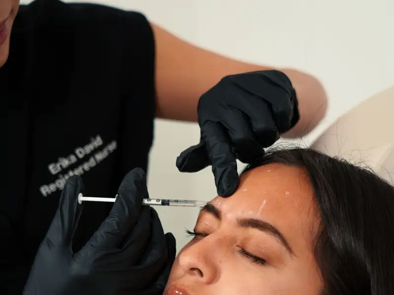
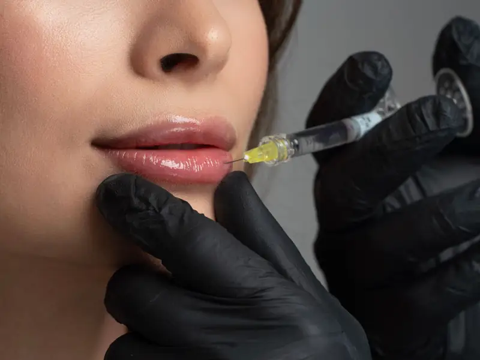

ServicesPerkhidmatan
Care for every visitRawatan untuk setiap lawatan
Not sure which treatment is right for you? Ask us on WhatsApp and we will guide you.Tidak pasti rawatan mana yang sesuai? Tanya kami di WhatsApp dan kami akan membantu.
- BotoxBotoks
- Dermal fillersPengisi dermal
- Thread lift
- Chemical peelsPengelupasan kimia
- Laser treatmentsRawatan laser
- HIFU skin tighteningHIFU pengetatan kulit
- PRP
- Skin boostersSkin booster
- IV dripsTitisan IV
- Regenerative treatmentsRawatan regeneratif


Your treatment journeyPerjalanan rawatan anda
Simple from the first messageMudah dari mesej pertama
- Message us on WhatsAppHantar mesej di WhatsApp
Tell us what you need and your preferred day.Beritahu kami keperluan anda dan hari pilihan.
- Get a confirmed slotDapatkan slot yang disahkan
We reply with an available time that suits you.Kami balas dengan masa yang sesuai untuk anda.
- Visit the clinicKunjungi klinik
Meet the doctor, ask questions and get clear advice.Berjumpa doktor, tanya soalan dan dapatkan nasihat yang jelas.
Meet your doctorKenali doktor anda
Dr Andy Yew
Every treatment at W360 Premier is planned and carried out under the care of Dr Andy Yew. Ask any question before you decide, there is no pressure.Setiap rawatan di W360 Premier dirancang dan dijalankan di bawah jagaan Dr Andy Yew. Tanya apa sahaja sebelum membuat keputusan, tiada paksaan.
Book on WhatsAppTempah di WhatsAppVisit usKunjungi kami
W360 Premier Clinic
3-G & 5-G, Jalan 22A/70A, Desa Sri Hartamas, 50480 Kuala LumpurOpening hoursWaktu operasi
Opening hours can change. Please message us on WhatsApp to confirm today's hours before you visit.Waktu operasi mungkin berubah. Sila hantar mesej di WhatsApp untuk mengesahkan waktu hari ini sebelum datang.
Book on WhatsAppTempah di WhatsAppFAQ
QuestionsSoalan lazim
Do I need an appointment?Perlukah saya membuat temujanji?
Walk-ins may be possible, but messaging us first on WhatsApp helps you avoid waiting.Anda mungkin boleh datang terus, tetapi menghantar mesej di WhatsApp dahulu membantu anda mengelak menunggu.
How do I ask about a treatment?Bagaimana saya bertanya tentang rawatan?
Send us a WhatsApp message with your question and we will explain the options and next steps.Hantar mesej WhatsApp dengan soalan anda dan kami akan terangkan pilihan dan langkah seterusnya.
Where are you located?Di mana lokasi anda?
3-G & 5-G, Jalan 22A/70A, Desa Sri Hartamas, 50480 Kuala Lumpur